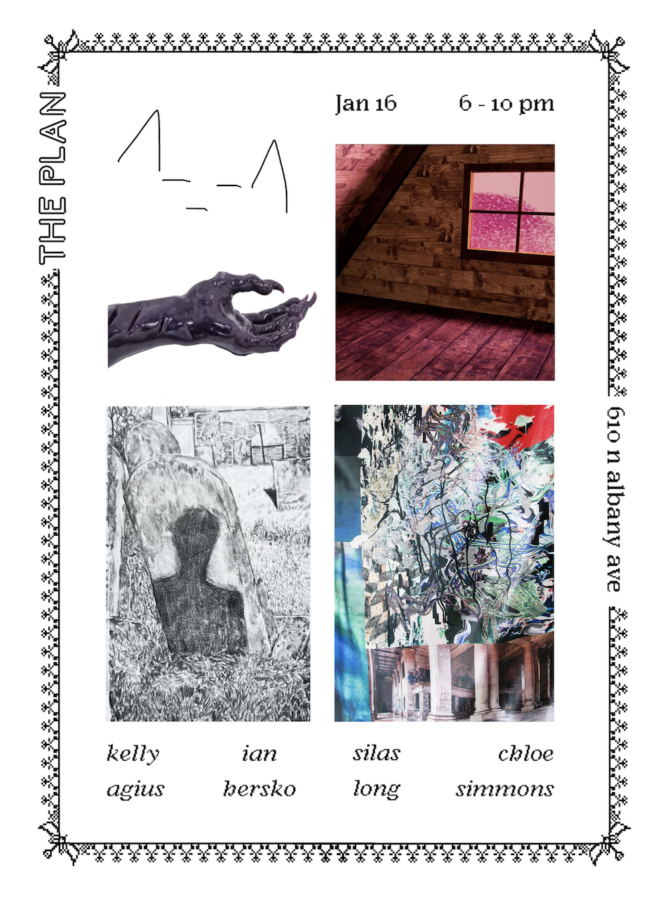

^-.-^
^-.-^ explores pain as content for material exploration. Working primarily in sculpture, drawing, textile, and video, the artists describe a sense of disenchantment, invoking intimate perspectives on collective vulnerability. They draw from fantasy symbolism and their personal archives to dissect their complicated relationship with mortality, sexuality, and identity. They are interested in how emotions create narratives that define our experience. Specifically, how the queer, trans, and femme experience is simultaneously uplifted and subjugated in both physical and digital realms.
Participating artists: Kelly Agius, Ian Hersko, Silas Long, Chloe Simmons
Curated by Silas Long